-
Test Cogmento CRM Application
6:22:10 am / 00:02:45:665 Fail
Test Cogmento CRM Application
01.11.2024 6:22:10 am 01.11.2024 6:24:56 am 00:02:45:665 · #test-id=1PassValidate the LoginAndHomePage Functionality #parameters conceptGiven user open "edge" browserSteps.SnippetsDemo.tearDown(io.cucumber.java.Scenario)11012024_062220Validate the LoginAndHomePage Functionality #parameters concept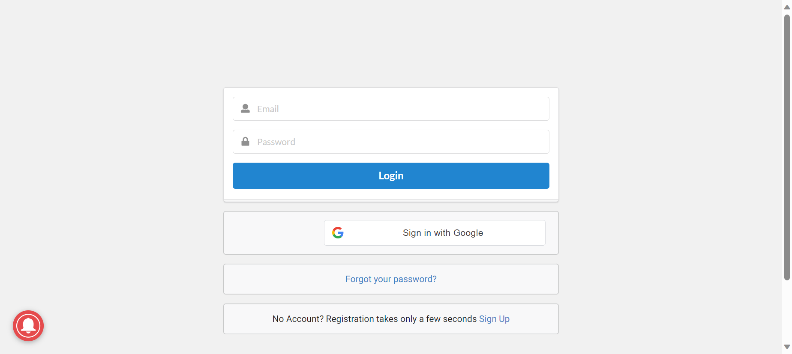When user enters valid "prafulp1010@gmail.com" , "Pr@ful0812" and click on login buttonSteps.SnippetsDemo.tearDown(io.cucumber.java.Scenario)11012024_062221Validate the LoginAndHomePage Functionality #parameters concept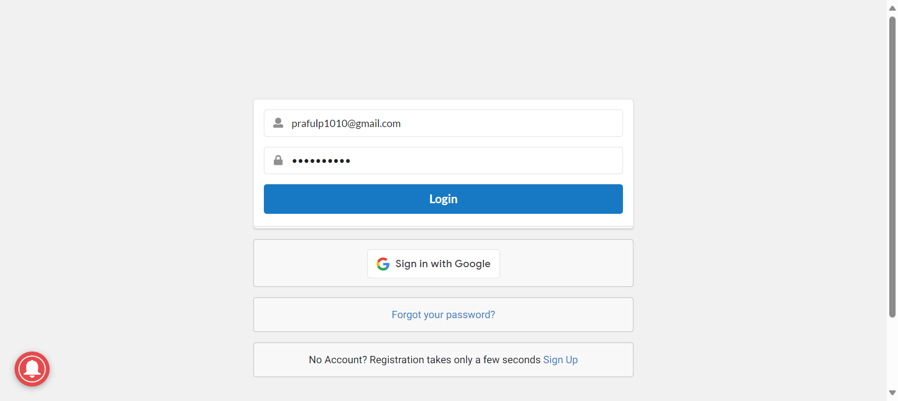Then user validate Home Page titleSteps.SnippetsDemo.tearDown(io.cucumber.java.Scenario)11012024_062221Validate the LoginAndHomePage Functionality #parameters concept And user validate Home Page URLSteps.SnippetsDemo.tearDown(io.cucumber.java.Scenario)11012024_062221Validate the LoginAndHomePage Functionality #parameters conceptAnd user validate Home Page LogoSteps.SnippetsDemo.tearDown(io.cucumber.java.Scenario)11012024_062224Validate the LoginAndHomePage Functionality #parameters concept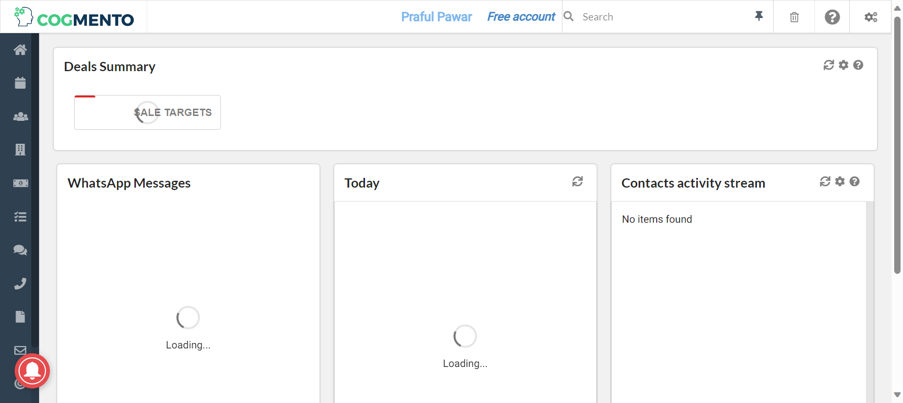FailValidate Contacts page Functionality #data driven testingPassValidate Contacts page Functionality #data driven testingGiven user click on Contacts buttonSteps.SnippetsDemo.tearDown(io.cucumber.java.Scenario)11012024_062224Validate Contacts page Functionality #data driven testing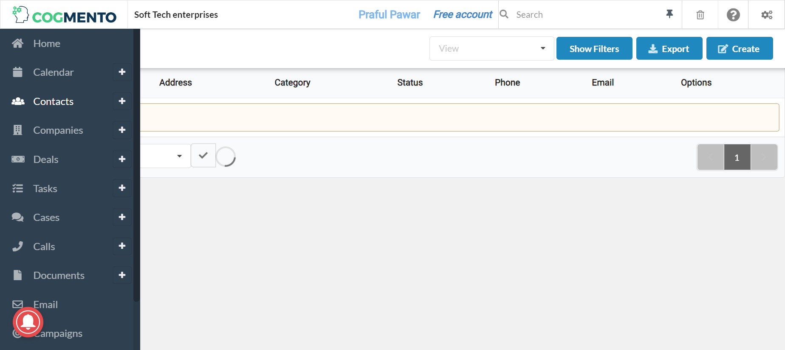And user validate user is on Contacts Page URLSteps.SnippetsDemo.tearDown(io.cucumber.java.Scenario)11012024_062225Validate Contacts page Functionality #data driven testingAnd user click on create contacts buttonSteps.SnippetsDemo.tearDown(io.cucumber.java.Scenario)11012024_062225Validate Contacts page Functionality #data driven testing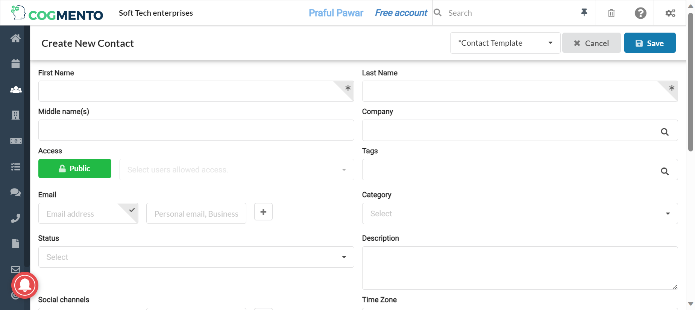And user enter valid "Janki","Shankar","Mahadevan" and click on save buttonSteps.SnippetsDemo.tearDown(io.cucumber.java.Scenario)11012024_062233Validate Contacts page Functionality #data driven testing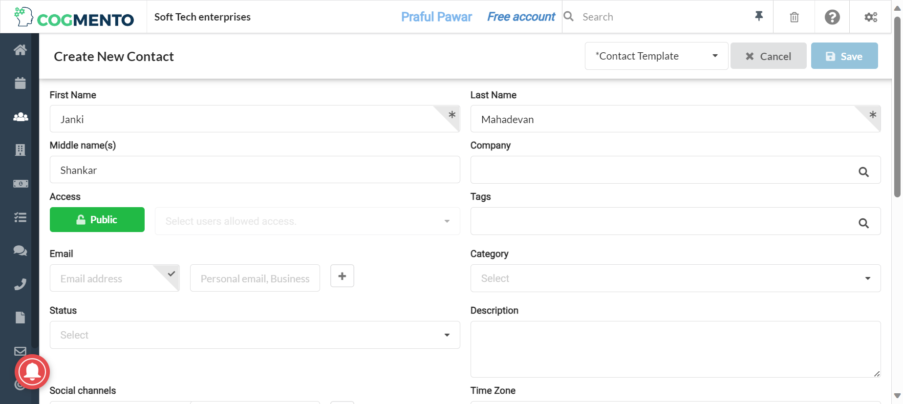And user delete the created contact by clicking on delete binSteps.SnippetsDemo.tearDown(io.cucumber.java.Scenario)11012024_062235Validate Contacts page Functionality #data driven testing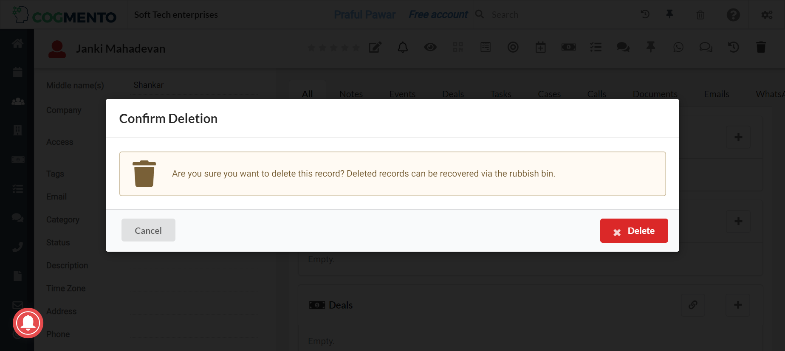And user click on confirm delete buttonSteps.SnippetsDemo.tearDown(io.cucumber.java.Scenario)11012024_062235Validate Contacts page Functionality #data driven testing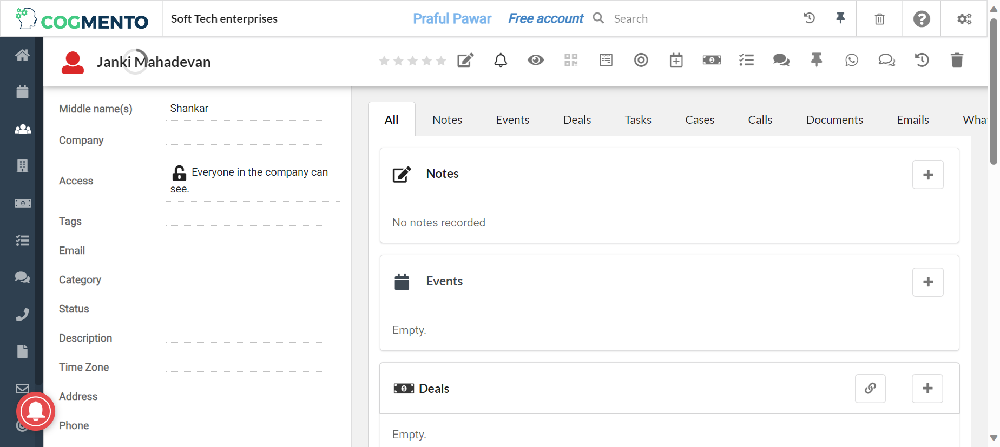PassValidate Contacts page Functionality #data driven testingGiven user click on Contacts buttonSteps.SnippetsDemo.tearDown(io.cucumber.java.Scenario)11012024_062236Validate Contacts page Functionality #data driven testing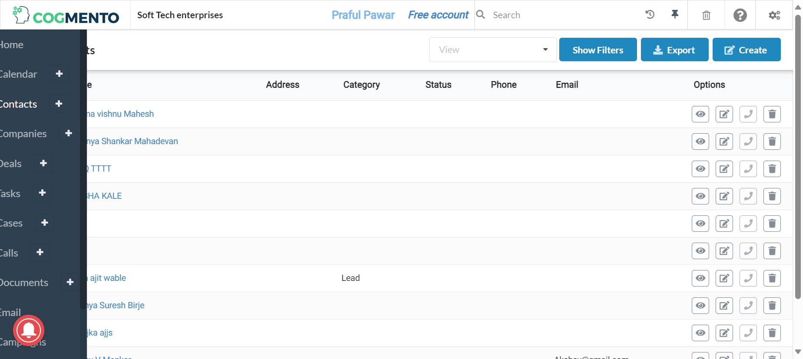And user validate user is on Contacts Page URLSteps.SnippetsDemo.tearDown(io.cucumber.java.Scenario)11012024_062236Validate Contacts page Functionality #data driven testingAnd user click on create contacts buttonSteps.SnippetsDemo.tearDown(io.cucumber.java.Scenario)11012024_062237Validate Contacts page Functionality #data driven testingAnd user enter valid "Parvati","Hari","Murari" and click on save buttonSteps.SnippetsDemo.tearDown(io.cucumber.java.Scenario)11012024_062244Validate Contacts page Functionality #data driven testingAnd user delete the created contact by clicking on delete binSteps.SnippetsDemo.tearDown(io.cucumber.java.Scenario)11012024_062246Validate Contacts page Functionality #data driven testingAnd user click on confirm delete buttonSteps.SnippetsDemo.tearDown(io.cucumber.java.Scenario)11012024_062247Validate Contacts page Functionality #data driven testing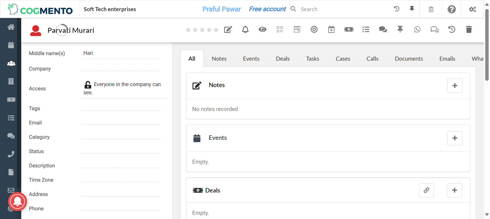PassValidate Contacts page Functionality #data driven testingGiven user click on Contacts buttonSteps.SnippetsDemo.tearDown(io.cucumber.java.Scenario)11012024_062247Validate Contacts page Functionality #data driven testing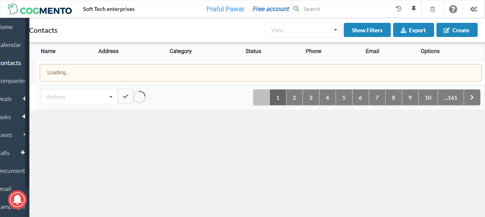And user validate user is on Contacts Page URLSteps.SnippetsDemo.tearDown(io.cucumber.java.Scenario)11012024_062247Validate Contacts page Functionality #data driven testing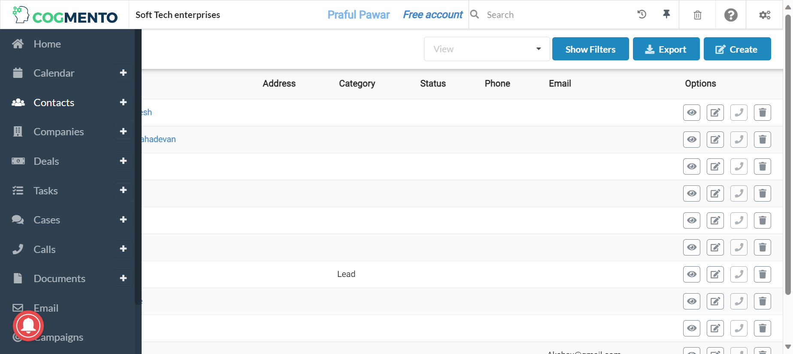And user click on create contacts buttonSteps.SnippetsDemo.tearDown(io.cucumber.java.Scenario)11012024_062248Validate Contacts page Functionality #data driven testing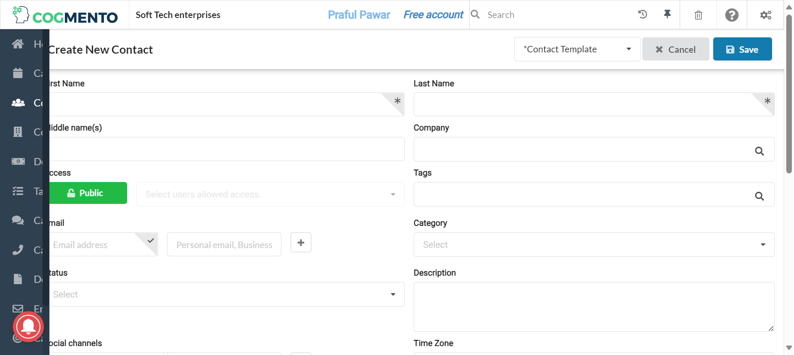And user enter valid "Sita","vishnu","Mahesh" and click on save buttonSteps.SnippetsDemo.tearDown(io.cucumber.java.Scenario)11012024_062255Validate Contacts page Functionality #data driven testing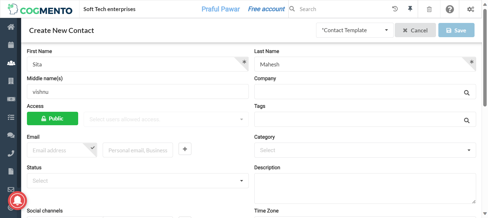And user delete the created contact by clicking on delete binSteps.SnippetsDemo.tearDown(io.cucumber.java.Scenario)11012024_062257Validate Contacts page Functionality #data driven testingAnd user click on confirm delete buttonSteps.SnippetsDemo.tearDown(io.cucumber.java.Scenario)11012024_062258Validate Contacts page Functionality #data driven testingFailValidate Contacts page Functionality #data driven testingGiven user click on Contacts buttonSteps.SnippetsDemo.tearDown(io.cucumber.java.Scenario)11012024_062258Validate Contacts page Functionality #data driven testing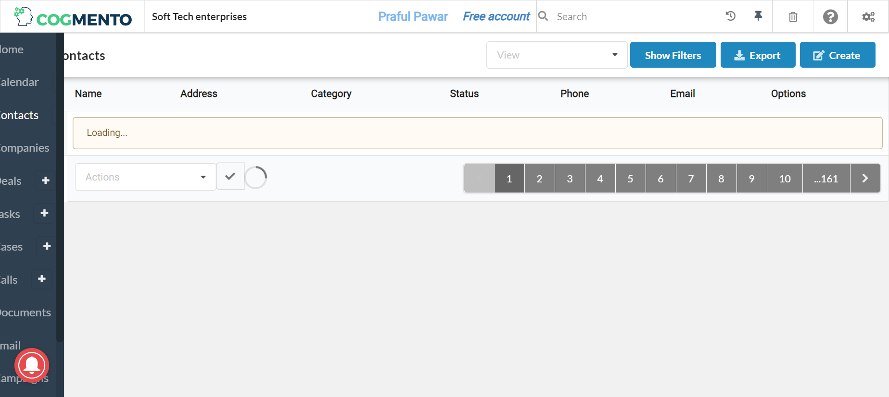And user validate user is on Contacts Page URLSteps.SnippetsDemo.tearDown(io.cucumber.java.Scenario)11012024_062258Validate Contacts page Functionality #data driven testing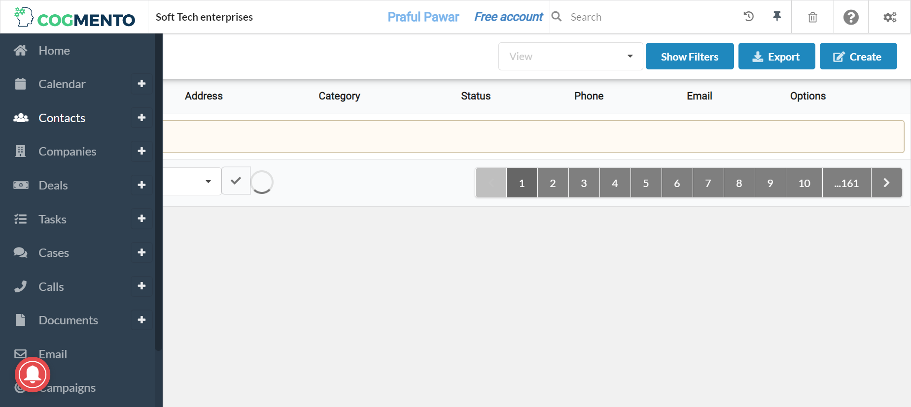And user click on create contacts buttonSteps.SnippetsDemo.tearDown(io.cucumber.java.Scenario)11012024_062259Validate Contacts page Functionality #data driven testing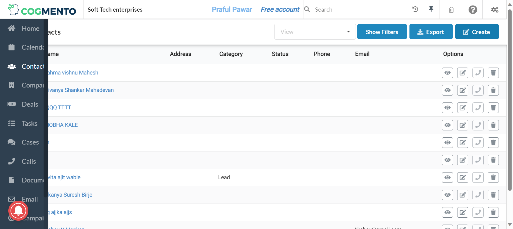And user enter valid "Laxmi","krishna","Hari" and click on save buttonSteps.SnippetsDemo.tearDown(io.cucumber.java.Scenario)And user delete the created contact by clicking on delete binStep skippedAnd user click on confirm delete buttonStep skippedFailValidate Companies Page Functionality #dataTableGiven user click on Companies linkSteps.SnippetsDemo.tearDown(io.cucumber.java.Scenario)And user validate the Companies Page Url
And user validate Home Page URLSteps.SnippetsDemo.tearDown(io.cucumber.java.Scenario)11012024_062221Validate the LoginAndHomePage Functionality #parameters conceptAnd user validate Home Page LogoSteps.SnippetsDemo.tearDown(io.cucumber.java.Scenario)11012024_062224Validate the LoginAndHomePage Functionality #parameters concept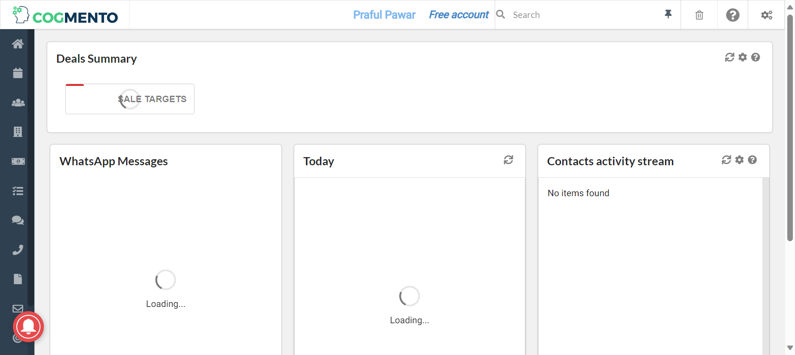FailValidate Contacts page Functionality #data driven testingPassValidate Contacts page Functionality #data driven testingGiven user click on Contacts buttonSteps.SnippetsDemo.tearDown(io.cucumber.java.Scenario)11012024_062224Validate Contacts page Functionality #data driven testing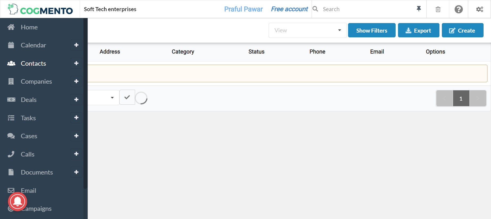And user validate user is on Contacts Page URLSteps.SnippetsDemo.tearDown(io.cucumber.java.Scenario)11012024_062225Validate Contacts page Functionality #data driven testingAnd user click on create contacts buttonSteps.SnippetsDemo.tearDown(io.cucumber.java.Scenario)11012024_062225Validate Contacts page Functionality #data driven testing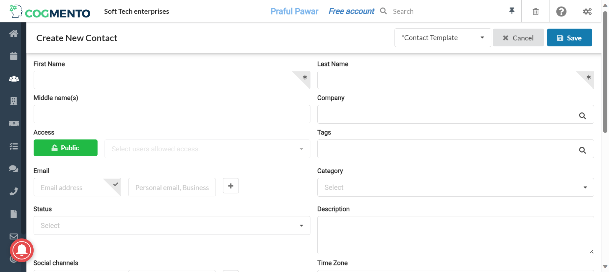And user enter valid "Janki","Shankar","Mahadevan" and click on save buttonSteps.SnippetsDemo.tearDown(io.cucumber.java.Scenario)11012024_062233Validate Contacts page Functionality #data driven testing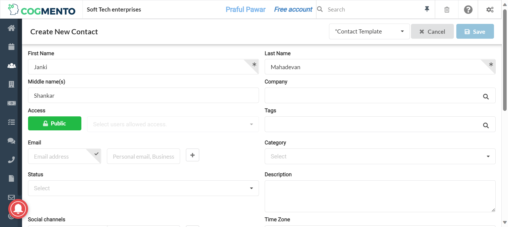And user delete the created contact by clicking on delete binSteps.SnippetsDemo.tearDown(io.cucumber.java.Scenario)11012024_062235Validate Contacts page Functionality #data driven testing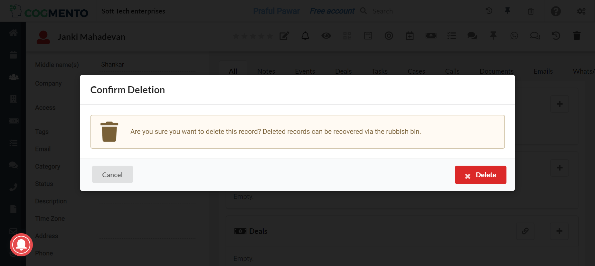And user click on confirm delete buttonSteps.SnippetsDemo.tearDown(io.cucumber.java.Scenario)11012024_062235Validate Contacts page Functionality #data driven testing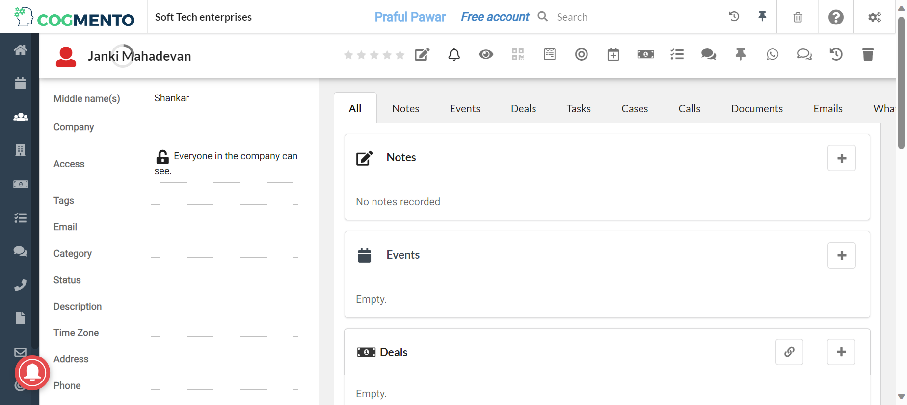PassValidate Contacts page Functionality #data driven testingGiven user click on Contacts buttonSteps.SnippetsDemo.tearDown(io.cucumber.java.Scenario)11012024_062236Validate Contacts page Functionality #data driven testing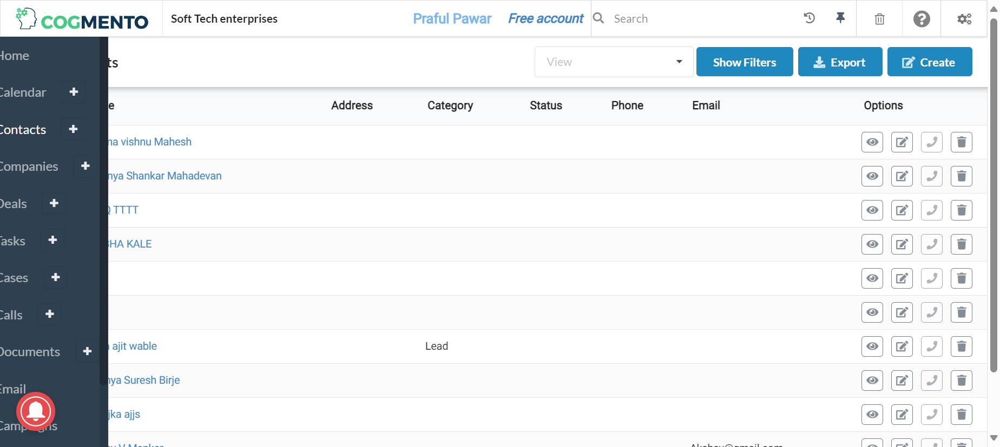And user validate user is on Contacts Page URLSteps.SnippetsDemo.tearDown(io.cucumber.java.Scenario)11012024_062236Validate Contacts page Functionality #data driven testingAnd user click on create contacts buttonSteps.SnippetsDemo.tearDown(io.cucumber.java.Scenario)11012024_062237Validate Contacts page Functionality #data driven testingAnd user enter valid "Parvati","Hari","Murari" and click on save buttonSteps.SnippetsDemo.tearDown(io.cucumber.java.Scenario)11012024_062244Validate Contacts page Functionality #data driven testingAnd user delete the created contact by clicking on delete binSteps.SnippetsDemo.tearDown(io.cucumber.java.Scenario)11012024_062246Validate Contacts page Functionality #data driven testingAnd user click on confirm delete buttonSteps.SnippetsDemo.tearDown(io.cucumber.java.Scenario)11012024_062247Validate Contacts page Functionality #data driven testing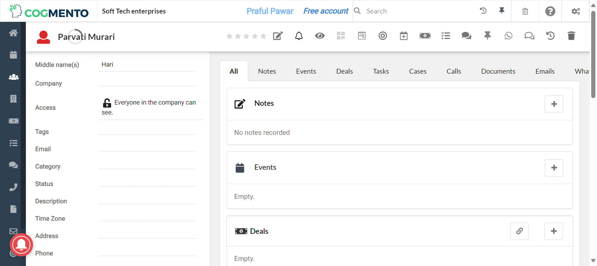PassValidate Contacts page Functionality #data driven testingGiven user click on Contacts buttonSteps.SnippetsDemo.tearDown(io.cucumber.java.Scenario)11012024_062247Validate Contacts page Functionality #data driven testing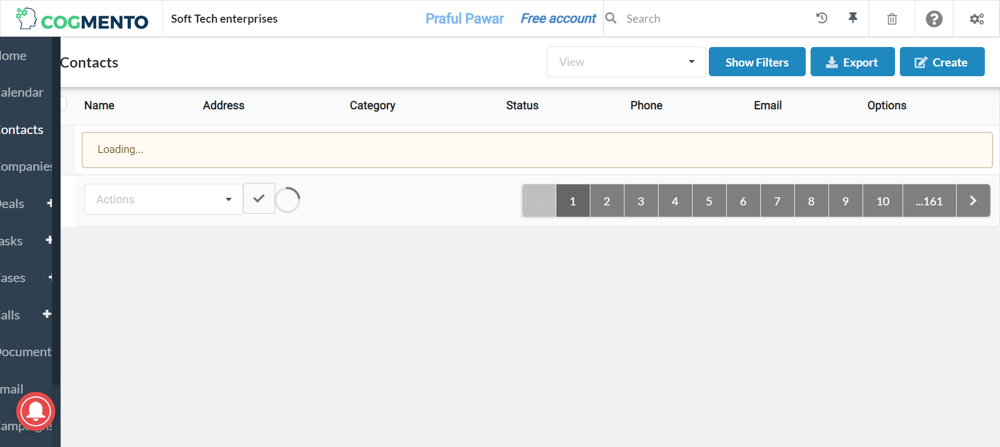And user validate user is on Contacts Page URLSteps.SnippetsDemo.tearDown(io.cucumber.java.Scenario)11012024_062247Validate Contacts page Functionality #data driven testing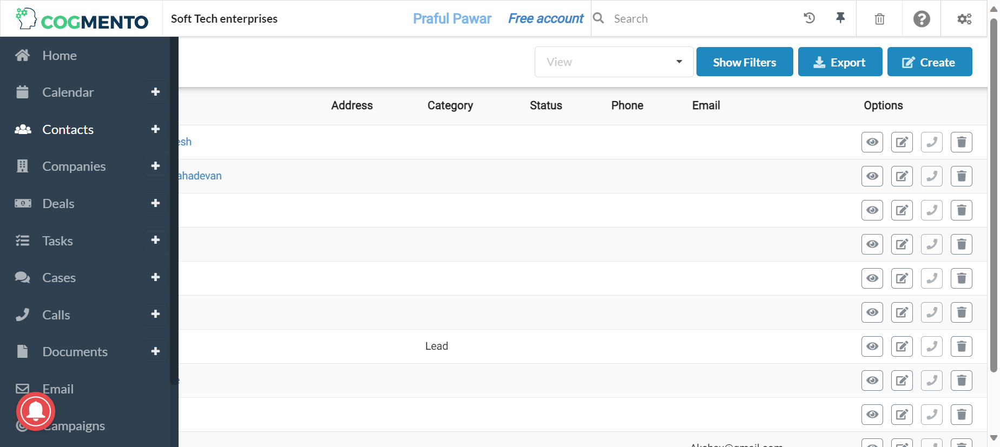And user click on create contacts buttonSteps.SnippetsDemo.tearDown(io.cucumber.java.Scenario)11012024_062248Validate Contacts page Functionality #data driven testing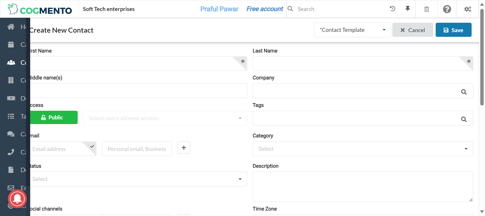And user enter valid "Sita","vishnu","Mahesh" and click on save buttonSteps.SnippetsDemo.tearDown(io.cucumber.java.Scenario)11012024_062255Validate Contacts page Functionality #data driven testing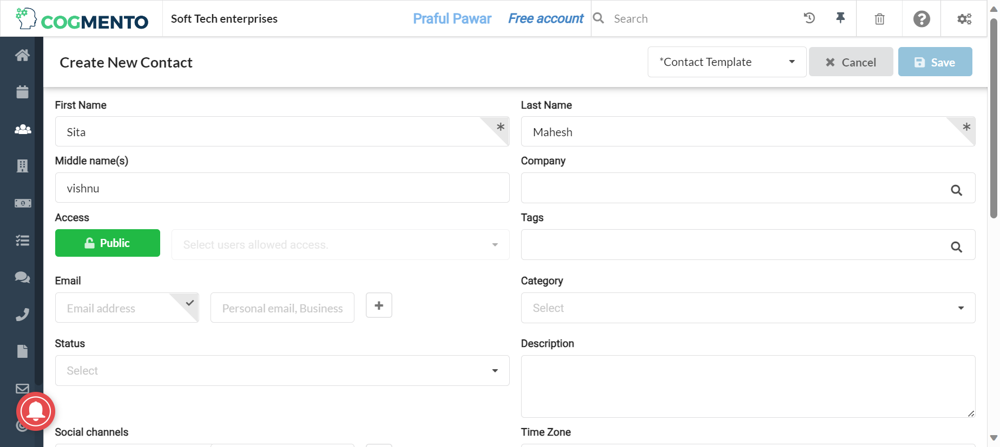And user delete the created contact by clicking on delete binSteps.SnippetsDemo.tearDown(io.cucumber.java.Scenario)11012024_062257Validate Contacts page Functionality #data driven testingAnd user click on confirm delete buttonSteps.SnippetsDemo.tearDown(io.cucumber.java.Scenario)11012024_062258Validate Contacts page Functionality #data driven testingFailValidate Contacts page Functionality #data driven testingGiven user click on Contacts buttonSteps.SnippetsDemo.tearDown(io.cucumber.java.Scenario)11012024_062258Validate Contacts page Functionality #data driven testing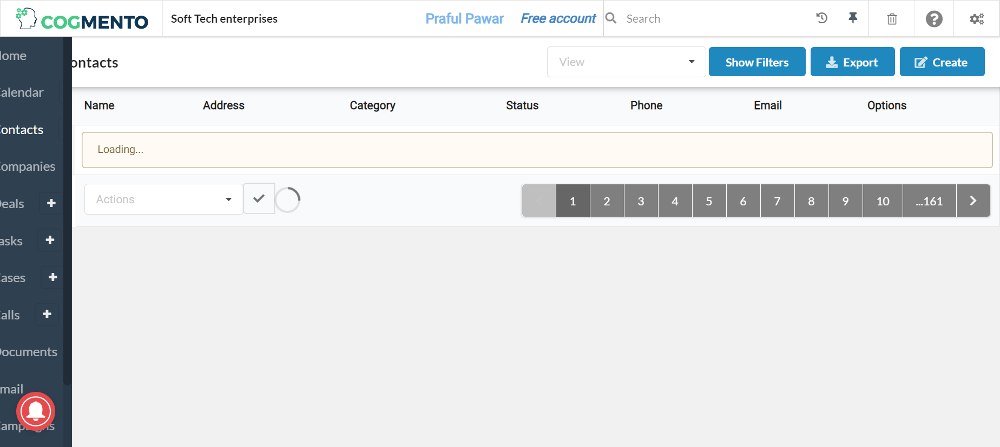And user validate user is on Contacts Page URLSteps.SnippetsDemo.tearDown(io.cucumber.java.Scenario)11012024_062258Validate Contacts page Functionality #data driven testing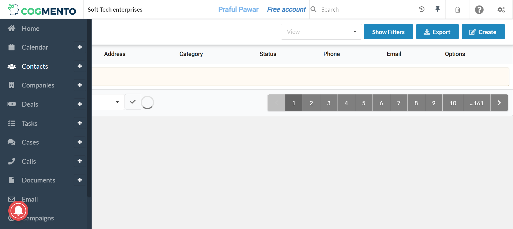And user click on create contacts buttonSteps.SnippetsDemo.tearDown(io.cucumber.java.Scenario)11012024_062259Validate Contacts page Functionality #data driven testing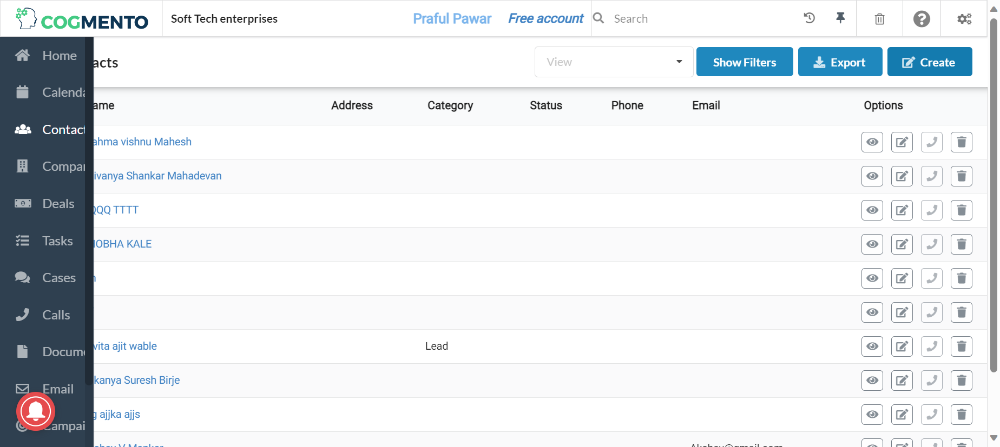And user enter valid "Laxmi","krishna","Hari" and click on save buttonSteps.SnippetsDemo.tearDown(io.cucumber.java.Scenario)And user delete the created contact by clicking on delete binStep skippedAnd user click on confirm delete buttonStep skippedFailValidate Companies Page Functionality #dataTableGiven user click on Companies linkSteps.SnippetsDemo.tearDown(io.cucumber.java.Scenario)And user validate the Companies Page Urlcompanies Step skippedWhen user clicks on create new company buttonStep skippedThen user enters valid company nameDutch Bank Step skippedAnd user click on save buttonStep skippedFailValidate the Deals Page Functionality # normal scenarioGiven user is on Deals Page and validate the Deals Page urlSteps.SnippetsDemo.tearDown(io.cucumber.java.Scenario)When user click on create deals buttonStep skippedThen user enter valid title and amountStep skippedAnd user delete the created dealStep skippedAnd user again click on delete binStep skippedAnd user click on deals iconStep skippedAnd user click on deleted deals name checkbox and then click on purge deleted button and then click on Ok buttonStep skippedThen user click on settings icon and click on logoutStep skipped
-
org.openqa.selenium.TimeoutException
1 tests
org.openqa.selenium.TimeoutException
1 failedStatus Timestamp TestName Fail 06:22:59 am And user enter valid "Laxmi","krishna","Hari" and click on save button Test Cogmento CRM Application.Validate Contacts page Functionality #data driven testing.And user enter valid "Laxmi","krishna","Hari" and click on save button -
org.openqa.selenium.NoSuchWindowException
5 tests
org.openqa.selenium.NoSuchWindowException
5 failedStatus Timestamp TestName Fail 06:23:55 am Steps.SnippetsDemo.tearDown(io.cucumber.java.Scenario) Test Cogmento CRM Application.Validate Contacts page Functionality #data driven testing.Steps.SnippetsDemo.tearDown(io.cucumber.java.Scenario)Fail 06:23:55 am Given user click on Companies link Test Cogmento CRM Application.Validate Companies Page Functionality #dataTable.Given user click on Companies linkFail 06:24:25 am Steps.SnippetsDemo.tearDown(io.cucumber.java.Scenario) Test Cogmento CRM Application.Validate Companies Page Functionality #dataTable.Steps.SnippetsDemo.tearDown(io.cucumber.java.Scenario)Fail 06:24:25 am Given user is on Deals Page and validate the Deals Page url Test Cogmento CRM Application.Validate the Deals Page Functionality # normal scenario.Given user is on Deals Page and validate the Deals Page urlFail 06:24:56 am Steps.SnippetsDemo.tearDown(io.cucumber.java.Scenario) Test Cogmento CRM Application.Validate the Deals Page Functionality # normal scenario.Steps.SnippetsDemo.tearDown(io.cucumber.java.Scenario)
Started
Jan 11, 2024 06:22:09 am
Ended
Jan 11, 2024 06:24:56 am
Features Passed
0
Features Failed
1
Features
Scenarios
Steps
Timeline
System/Environment
| Name | Value |
|---|---|
| AppName | CONGMENTO CRM URL |
| user | Shonali |
| build | Release 11.0 |
| os | Window11 |